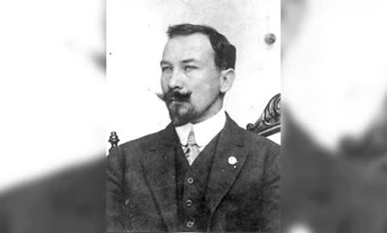

Casa García de Quintanilla · Lampazos

Lampazos de Naranjo, 1849–20 de noviembre de 1904. FamilySearch L79N-H1B. Presidente municipal. Farmacéutico. Masón. Fundó en Laredo la logia Benito Juárez, primera logia mexicana en Texas. Esposo de Juana Naranjo Pérez.
El hijo, Nemesio García Naranjo, nace el 8 de marzo de 1883 en Lampazos. Abogado, diputado, ministro de Instrucción Pública con Huerta, académico. Casa en 1912 con Angelina Natalia Elizondo Cisneros.
FamilySearch lo publica como primo sexto del antepasado de la 6.ª generación de Francisco Javier García Gaona, por Lucas García Rodríguez × Juliana Farías de Quintanilla.